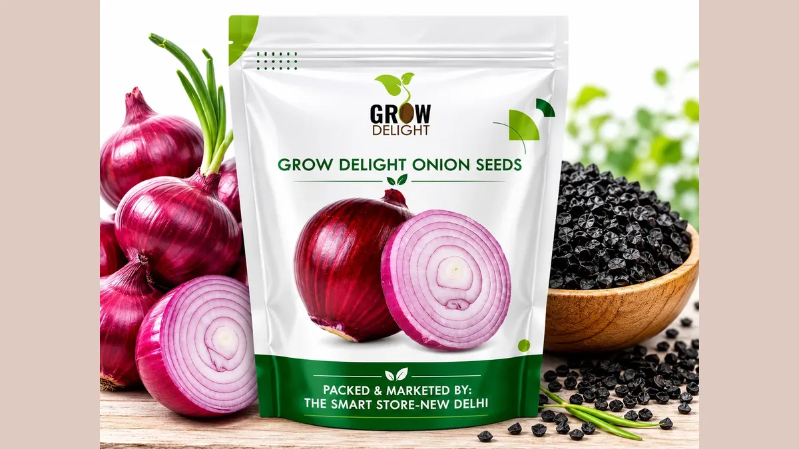

🗓️ रोपाई 15 जुलाई – 31 अगस्त📍 महाराष्ट्र · MP · कर्नाटक · गुजरात🦠 बैंगनी धब्बा · थ्रिप्स
खरीफ प्याज की खेती और भंडारण
Kharif Onion Cultivation & Storage — Complete Guide
खरीफ प्याज पर अक्टूबर–दिसंबर की पूरी सप्लाई टिकी है, पर इसे बारिश, जलभराव, बैंगनी धब्बा और थ्रिप्स — चारों एक साथ झेलने पड़ते हैं। रोपाई का सही समय 15 जुलाई से 31 अगस्त है।
✍️ Kunal Rajput — KrashiMitra⏱️ 9 मिनट पढ़ें📅 जुलाई 2026

प्याज की किस्म और सुखाई ही तय करती है कि भंडारण में कितना नुकसान होगा।
बरसात में प्याज उगाने का पूरा गणित
🏚️
30–40%
भंडारण में नुकसान
🛏️
15 से.मी.
क्यारी की ऊँचाई
🗓️
6–7 हफ्ते
रोपाई के समय पौध की उम्र
📖
भूमिका
खरीफ प्याज वह फसल है जिस पर अक्टूबर-दिसंबर में पूरे देश की प्याज की सप्लाई टिकी होती है — और यही वह समय है जब बाज़ार में भाव सबसे ज़्यादा उछलता है। लेकिन खरीफ प्याज उगाना रबी प्याज से कहीं ज़्यादा मुश्किल है, क्योंकि इसे बरसात, जलभराव, बैंगनी धब्बा रोग और थ्रिप्स — चारों एक साथ झेलने पड़ते हैं।
खरीफ प्याज की रोपाई का सही समय 15 जुलाई से 31 अगस्त तक है, जब पौध 6–7 हफ्ते की हो जाए। यानी अभी का महीना ही इस फसल का सबसे अहम फैसला लेने का समय है। और एक बात जो शुरू में ही साफ कर देनी चाहिए — खरीफ प्याज भंडारण की फसल नहीं है। इसकी गर्दन मोटी और नमी ज़्यादा रहती है, इसलिए यह जल्दी सड़ती है। लंबे भंडारण के लिए रबी की प्याज होती है। इस लेख में खरीफ प्याज की सही किस्म, उठी हुई क्यारी (रेज़्ड बेड) की तकनीक, बैंगनी धब्बा और थ्रिप्स का इलाज, और भंडारण में 30–40% तक होने वाले नुकसान को घटाने का तरीका — आसान हिंदी में।
विज्ञापन
📊
खरीफ प्याज और रबी प्याज — फर्क समझ लीजिए
यही फर्क न समझने से हर साल हज़ारों किसान खरीफ की प्याज भंडार में डालकर उसे सड़ते हुए देखते हैं।
बात
खरीफ प्याज
रबी प्याज
रोपाई का समय
15 जुलाई – 31 अगस्त
दिसंबर – जनवरी
कटाई
अक्टूबर – दिसंबर
अप्रैल – मई
मुख्य मकसद
तुरंत बाज़ार में बिक्री
भंडारण और साल भर की सप्लाई
भंडारण क्षमता
बहुत कम — गर्दन मोटी, नमी ज़्यादा
4–6 महीने तक
मुख्य खतरा
जलभराव, बैंगनी धब्बा, थ्रिप्स
बेमौसम बारिश, ओले
भाव
आमतौर पर ऊँचा (कम सप्लाई का समय)
कटाई के समय अक्सर नीचे
💡
खरीफ प्याज का पूरा गणित ही अलग है। यह फसल भंडारण के लिए नहीं, उस खिड़की में बेचने के लिए उगाई जाती है जब मंडी में प्याज कम होती है। इसलिए इसमें उपज से ज़्यादा ज़रूरी है फसल का समय पर और बिना सड़े मंडी तक पहुँचना।
🌱
खरीफ के लिए सही किस्म
हर प्याज की किस्म खरीफ में नहीं चलती। बरसात के मौसम में वही किस्में टिकती हैं जो कम दिन की रोशनी में भी गाँठ बना लें और जिनमें बैंगनी धब्बा तथा थ्रिप्स सहने की क्षमता हो।
एग्रीफाउंड डार्क रेड: खरीफ के लिए देश भर में सबसे प्रचलित किस्मों में से एक — गहरा लाल रंग, अच्छी उपज।
N-53: खरीफ की पुरानी और भरोसेमंद किस्म, बरसात में अच्छा प्रदर्शन।
बसवंत-780: महाराष्ट्र की खरीफ पट्टी में व्यापक रूप से उगाई जाने वाली किस्म।
भीमा सुपर, भीमा डार्क रेड, भीमा रेड, भीमा राज: ICAR-प्याज एवं लहसुन अनुसंधान निदेशालय (DOGR), राजगुरुनगर, पुणे द्वारा विकसित खरीफ किस्में।
अर्का कल्याण: खरीफ में उपयुक्त, मध्यम आकार की गाँठ।
⚠️
किस्मों का प्रदर्शन ज़िले की मिट्टी, बारिश और दिन की लंबाई के अनुसार बहुत बदलता है, और अनुशंसित सूची हर साल संशोधित होती है। बीज खरीदने से पहले अपने जिले के कृषि विज्ञान केंद्र (KVK) या उद्यान विभाग से इस साल की सूची ज़रूर लें, और प्रमाणित बीज ही खरीदकर बिल रखें।
🛏️
उठी हुई क्यारी — खरीफ प्याज की सबसे बड़ी तकनीक
खरीफ प्याज में सबसे ज़्यादा नुकसान बीमारी से नहीं, खेत में पानी ठहरने से होता है। प्याज की जड़ें उथली होती हैं और 24 घंटे का जलभराव भी गाँठ को सड़ा देता है। इसका इलाज एक ही है — समतल खेत में नहीं, उठी हुई क्यारी (रेज़्ड बेड) पर रोपाई।
क्यारी ऊँची बनाएँ: लगभग 15 से.मी. ऊँची क्यारी और दोनों तरफ पानी निकलने की नाली। बारिश का पानी नाली से निकल जाता है, गाँठ पानी में नहीं बैठती।
पौध की उम्र: रोपाई के समय पौध 6–7 हफ्ते की और पेंसिल की मोटाई जितनी होनी चाहिए। ज़्यादा पुरानी पौध लगाने पर फसल जल्दी बोल्टिंग (डंठल निकलना) करती है।
दूरी: आमतौर पर 15 × 10 से.मी. — खरीफ में हल्की ज़्यादा दूरी रखना बेहतर है ताकि हवा चले और पत्तियाँ जल्दी सूखें।
पौध का उपचार: रोपाई से पहले पौध की जड़ों को अनुशंसित फफूंदनाशी या ट्राइकोडर्मा के घोल में डुबोना जड़-सड़न से बचाता है।
नर्सरी भी उठी हुई हो: बरसात में समतल नर्सरी में आर्द्रगलन (damping off) से पौध ही खत्म हो जाती है — नर्सरी की क्यारी भी ऊँची बनाएँ।
खरपतवार जल्दी निकालें: प्याज की पत्ती पतली होती है और शुरुआती 45 दिन में खरपतवार उससे ज़्यादा तेज़ बढ़ता है।
विज्ञापन
🦠
बैंगनी धब्बा और थ्रिप्स — खरीफ के दो बड़े दुश्मन
बैंगनी धब्बा (Purple Blotch) की पहचान है — पत्ती पर पहले छोटे सफेद-धँसे धब्बे, जो बढ़कर बीच से बैंगनी और किनारे से पीले हो जाते हैं। धब्बे वाली जगह से पत्ती मुड़कर टूट जाती है। लगातार नमी और बादल इसे तेज़ी से फैलाते हैं।
थ्रिप्स बहुत छोटे कीट होते हैं जो पत्ती के अंदर वाले हिस्से (गोभ) में छिपकर रस चूसते हैं। पहचान है पत्तियों पर चाँदी जैसी सफेद लकीरें और पत्ती का टेढ़ा-मुड़ा दिखना। थ्रिप्स सूखे-गर्म दिनों में तेज़ी से बढ़ते हैं।
समस्या
पहचान
आमतौर पर सिफ़ारिश की जाने वाली दवा
बैंगनी धब्बा
पत्ती पर बीच से बैंगनी, किनारे से पीले धब्बे
मैंकोज़ेब 75% WP लगभग 2 ग्राम/लीटर, या अनुशंसित ट्राइएज़ोल फफूंदनाशी
थ्रिप्स
पत्तियों पर चाँदी जैसी लकीरें, गोभ में छिपे कीट
अनुशंसित थ्रिप्स-नाशी (जैसे फिप्रोनिल या स्पिनोसैड आधारित), लेबल के अनुसार
जड़/गाँठ सड़न
पौधा पीला होकर गिरना, गाँठ का निचला हिस्सा गला
जल निकासी + ट्राइकोडर्मा/अनुशंसित फफूंदनाशी की ड्रेंचिंग
आर्द्रगलन (नर्सरी में)
पौध ज़मीन के पास से गलकर गिरना
उठी हुई नर्सरी + बीज उपचार
💡
प्याज पर छिड़काव का सबसे ज़रूरी नियम — स्टिकर मिलाएँ। प्याज की पत्ती चिकनी और मोमी होती है, इसलिए दवा का घोल उस पर टिकता ही नहीं, बूँदें लुढ़ककर गिर जाती हैं। घोल में चिपकने वाला पदार्थ (स्टिकर/स्प्रेडर) मिलाना उसी दवा का असर कई गुना बढ़ा देता है। यह एक छोटी बात हर साल हज़ारों रुपये की दवा बर्बाद होने से बचाती है।
⚠️
ऊपर दी गई मात्राएँ सामान्य अनुशंसा हैं। खरीदने से पहले डिब्बे के लेबल पर "प्याज" और लक्षित रोग/कीट का नाम लिखा है या नहीं ज़रूर देखें, और अंतिम मात्रा तथा छिड़काव का समय अपने कृषि विज्ञान केंद्र (KVK) या उद्यान विभाग से पुष्टि करके तय करें। कटाई से पहले की प्रतीक्षा अवधि (PHI) का पालन ज़रूर करें — प्याज सीधे खाने वाली फसल है।
🧺
कटाई और क्योरिंग — भंडारण की असली तैयारी
प्याज कब निकालें, यह पत्तियों से तय होता है: जब 50–70% पौधों की गर्दन मुड़कर पत्तियाँ गिरने लगें, तब कटाई का सही समय है। इससे बहुत पहले निकालने पर गाँठ कच्ची रहती है और बहुत देर करने पर दोबारा जड़ें निकलने लगती हैं।
खेत में क्योरिंग: निकाली गई प्याज को पत्तियों समेत खेत में ही कुछ दिन ढेर बनाकर छोड़ें, इस तरह कि ऊपर की गाँठें नीचे वाली को धूप से ढक लें। सीधी तेज़ धूप गाँठ को झुलसा देती है।
छाया में क्योरिंग: इसके बाद हवादार छाया में और सुखाएँ, जब तक बाहरी छिलका सूखकर कागज़ जैसा न हो जाए और गर्दन पूरी तरह सूख न जाए।
गर्दन काटें: गाँठ से लगभग 2–2.5 से.मी. ऊपर गर्दन काटें। एकदम गाँठ से सटाकर काटने पर वहीं से सड़न शुरू होती है।
छँटाई करें: कटी-फटी, दो-गाँठ वाली, मोटी गर्दन वाली और अंकुरित प्याज अलग कर दें — ये भंडार में सबसे पहले सड़ती हैं और बाकी को भी खराब करती हैं।
गीली प्याज कभी भंडार में न डालें: यह पूरे ढेर को सड़ाने का सबसे तेज़ रास्ता है।
🏚️
भंडारण — 30–40% नुकसान कैसे घटाएँ
भंडारण में प्याज का नुकसान तीन रास्तों से होता है — सड़न, अंकुरण, और वज़न का सूखना। सामान्य देसी भंडार गृहों में यह कुल नुकसान 30–40% तक पहुँच जाता है। इसे घटाने के नियम सीधे हैं:
हवा का आना-जाना सबसे ज़रूरी है: भंडार गृह की दीवारों और फर्श — दोनों तरफ से हवा गुजरनी चाहिए। बंद कमरे में रखी प्याज सड़ना तय है।
ढेर पतला रखें: बहुत ऊँचा ढेर नीचे की प्याज को दबाकर गर्म और नम कर देता है।
फर्श से ऊपर रखें: सीधे ज़मीन पर रखी प्याज नीचे से नमी खींचती है — लकड़ी के तख्ते या जाली का प्लेटफॉर्म बनाएँ।
छत से गर्मी न आए: टिन की छत के नीचे सीधे रखी प्याज गर्मी से अंकुरित होती है — छत को ढकें या दोहरी छत बनाएँ।
हर 15–20 दिन पर छँटाई: एक सड़ी प्याज अपने आसपास की दस प्याज खराब करती है। नियमित छँटाई सबसे सस्ता बीमा है।
बारिश का पानी अंदर न आए: और भंडार के आसपास पानी जमा न होने दें।
खरीफ की प्याज लंबे भंडारण के लिए नहीं है: इसे जल्दी बेचने की योजना बनाकर ही उगाएँ; लंबे भंडारण के लिए रबी की फसल रखें।
🚫
ये गलतियाँ कभी न करें
समतल खेत में खरीफ प्याज लगाना — एक भारी बारिश और फसल पानी में। उठी हुई क्यारी और नाली अनिवार्य है।
स्टिकर के बिना छिड़काव — प्याज की मोमी पत्ती पर दवा टिकती ही नहीं; पैसा बहकर ज़मीन में चला जाता है।
ज़्यादा उम्र की पौध लगाना — बोल्टिंग (डंठल निकलना) बढ़ जाती है और गाँठ नहीं बनती।
गर्दन को गाँठ से सटाकर काटना — वहीं से सड़न घुसती है; 2–2.5 से.मी. डंठल छोड़ें।
बिना क्योरिंग के भंडार में डालना — गीली गर्दन वाली प्याज पूरे ढेर को ले डूबती है।
खरीफ की प्याज महीनों रोक लेना — यह भंडारण की फसल है ही नहीं; भाव का इंतज़ार करते-करते माल सड़ जाता है।
देर से नाइट्रोजन देना — कटाई के करीब यूरिया देने से गर्दन मोटी रहती है और भंडारण क्षमता घट जाती है।
🗓️
खरीफ प्याज का कैलेंडर
समय
ज़रूरी काम
मई – जून
उठी हुई क्यारी पर नर्सरी; बीज उपचार; KVK से किस्म की पुष्टि
खरपतवार नियंत्रण, नाली की सफाई, थ्रिप्स की निगरानी
अगस्त – सितंबर
बैंगनी धब्बा के लिए बचावी छिड़काव — घोल में स्टिकर ज़रूर मिलाएँ
गाँठ बनने की अवस्था
नाइट्रोजन बंद करें; पानी नियंत्रित रखें
अक्टूबर – दिसंबर
50–70% गर्दन गिरने पर कटाई; खेत में और छाया में क्योरिंग
कटाई के बाद
2–2.5 से.मी. गर्दन छोड़कर कटाई, छँटाई, हवादार भंडार; हर 15–20 दिन पर दोबारा छँटाई
✅
निष्कर्ष
खरीफ प्याज में मुनाफा उपज से नहीं, फसल को सड़ने से बचाने से आता है। तीन बातें याद रखें: उठी हुई क्यारी और पक्की नाली बनाएँ, हर छिड़काव में स्टिकर मिलाएँ, और क्योरिंग पूरी किए बिना एक भी गाँठ भंडार में न डालें।
खरीफ की प्याज बेचने के लिए होती है, रोकने के लिए नहीं — यही इस फसल का पूरा गणित है।
विज्ञापन
❓
अक्सर पूछे जाने वाले सवाल
1खरीफ प्याज की रोपाई का सही समय क्या है?
खरीफ प्याज की रोपाई का सही समय 15 जुलाई से 31 अगस्त तक है, और उस समय पौध 6–7 हफ्ते की तथा पेंसिल जितनी मोटी होनी चाहिए। इससे ज़्यादा पुरानी पौध लगाने पर बोल्टिंग (डंठल निकलना) बढ़ जाती है और गाँठ ठीक से नहीं बनती।
2खरीफ प्याज के लिए कौन सी किस्में अच्छी हैं?
खरीफ के लिए आमतौर पर एग्रीफाउंड डार्क रेड, N-53, बसवंत-780, अर्का कल्याण तथा ICAR-DOGR, राजगुरुनगर की भीमा सुपर, भीमा डार्क रेड, भीमा रेड और भीमा राज जैसी किस्में उगाई जाती हैं। किस्मों का प्रदर्शन ज़िले के अनुसार बदलता है, इसलिए बीज खरीदने से पहले अपने KVK या उद्यान विभाग से इस साल की सूची ज़रूर लें।
3क्या खरीफ की प्याज को लंबे समय तक भंडारित किया जा सकता है?
नहीं — खरीफ प्याज भंडारण की फसल नहीं है। इसकी गर्दन मोटी और नमी ज़्यादा रहती है, इसलिए यह जल्दी सड़ती है। लंबे भंडारण (4–6 महीने) के लिए रबी की प्याज रखी जाती है। खरीफ की फसल इसी मकसद से उगाई जाती है कि अक्टूबर–दिसंबर की कम सप्लाई वाली खिड़की में जल्दी बेची जाए।
4खरीफ प्याज में उठी हुई क्यारी क्यों ज़रूरी है?
क्योंकि प्याज की जड़ें उथली होती हैं और 24 घंटे का जलभराव भी गाँठ को सड़ा देता है। लगभग 15 से.मी. ऊँची क्यारी और दोनों तरफ नाली बनाने से बारिश का पानी तुरंत निकल जाता है और गाँठ पानी में नहीं बैठती। खरीफ प्याज में यह अकेली तकनीक सबसे ज़्यादा नुकसान बचाती है।
5प्याज पर छिड़काव करने पर दवा असर क्यों नहीं करती?
क्योंकि प्याज की पत्ती चिकनी और मोमी होती है, जिस पर घोल की बूँदें टिकती नहीं और लुढ़ककर गिर जाती हैं। इसका आसान हल है — हर छिड़काव के घोल में चिपकने वाला पदार्थ (स्टिकर/स्प्रेडर) मिलाना। इससे उसी दवा का असर कई गुना बढ़ जाता है।
6प्याज में बैंगनी धब्बा रोग की पहचान और इलाज क्या है?
पहचान है — पत्ती पर पहले छोटे सफेद-धँसे धब्बे, जो बढ़कर बीच से बैंगनी और किनारे से पीले हो जाते हैं, और वहीं से पत्ती मुड़कर टूट जाती है। बचाव के लिए आमतौर पर मैंकोज़ेब 75% WP लगभग 2 ग्राम/लीटर या अनुशंसित ट्राइएज़ोल फफूंदनाशी का छिड़काव किया जाता है, हमेशा स्टिकर मिलाकर। लेबल और मात्रा की पुष्टि अपने KVK से करें।
7प्याज की कटाई कब करनी चाहिए?
जब 50–70% पौधों की गर्दन मुड़कर पत्तियाँ गिरने लगें, तब कटाई का सही समय होता है। बहुत जल्दी निकालने पर गाँठ कच्ची रहती है और बहुत देर करने पर दोबारा जड़ें निकलने लगती हैं। कटाई के बाद खेत में और फिर छाया में क्योरिंग ज़रूरी है, और गर्दन गाँठ से 2–2.5 से.मी. ऊपर काटनी चाहिए।
8भंडारण में प्याज सड़ने से कैसे बचाएँ?
सामान्य भंडार में नुकसान 30–40% तक पहुँच जाता है। इसे घटाने के लिए — भंडार में दीवार और फर्श दोनों तरफ से हवा गुज़रे, ढेर पतला रखें, प्याज को सीधे ज़मीन पर नहीं बल्कि लकड़ी/जाली के प्लेटफॉर्म पर रखें, टिन की छत की सीधी गर्मी से बचाएँ, और हर 15–20 दिन पर छँटाई करके सड़ी गाँठें निकालें — एक सड़ी प्याज आसपास की दस खराब कर देती है।
🌾
KrashiMitra.in — आपका विश्वसनीय कृषि साथी
मंडी भाव, सरकारी योजनाएं, बीज-खाद की जानकारी और फसल रोग उपचार — सब कुछ हिंदी में।